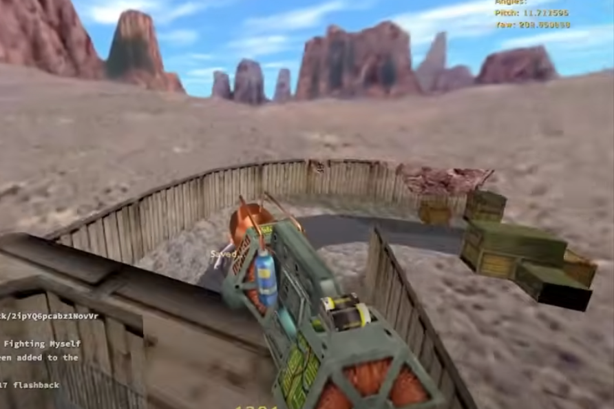
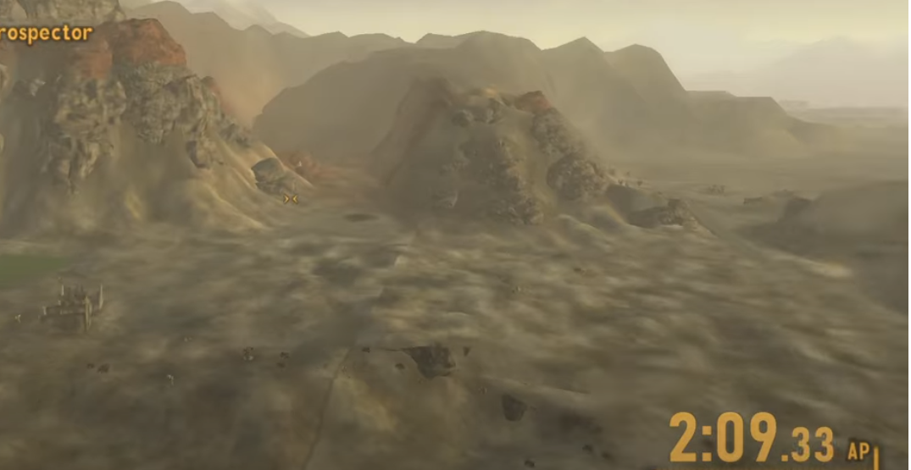

Mario64 and Speedruns.
(I mostly wanted an excuse to use this background)
Mario64 has one of the most prominent speedrunning communities of all time, and with good reason. There are so many different ways to complete the game, such as 0 star runs, 1 star runs, 16, 70, and 120 star runs, they each have their own strategies of completing the game. Even without mentioning the the other weirder catagories, there's already 5 catagories, and that's already more than other communities. Some of the strategies that are performed during the speedrun are insane when you figure out how they work, like backwards long jumps or the wall clip on whomps fortress for the star inside of said wall.
the only other speedrun to come close to competing with Mario64 in how insane and popular they are is Half-Life 1. Precise movements to gain momentem to fly across most levels besides interior ones.
My personal favorite are the Fallout: New Vegas any% yes man runs that are only 8 minutes long.
How people find these things out is beyond me.
Mario64
Half-Life
Fallout: New Vegas
The speedrunning community has been saving their scores to Speedrun.com for years. If you have any interest in a certain game, they've probably made a catagory for it.